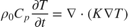
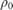
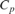
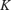
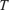
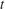

ThermalSolver
Package: kwave.toolbox Superclasses: kwave.toolbox.TimeDomainSolver
Thermal solver.
Contents
Description
ThermalSolver implements a time-domain solution to the diffusion equation in the form:

where

is the density,
is the specific heat capacity at constant pressure,
is the thermal conductivity,
is the temperature, and
is time.The computation is based on a k-space pseudospectral scheme in which spatial gradients are calculated using the Fourier collocation spectral method, and temporal gradients are calculated using a k-space corrected finite difference scheme. For a homogeneous medium, the formulation is exact and unconditionally stable. For a heterogeneous medium, the time scheme allows larger time-steps to be taken for the same level of accuracy compared to conventional pseudospectral time-domain methods.
The simulation is defined by five input objects which define the computational grid, medium properties, sources, sensors, and settings.
After an object of the ThermalSolver class is created, the simulation is run by calling solver.run. During the simulation, a visualisation of the temperature field is displayed. The current temperature can be queried (or modified) at any point using the property solver.temperature.
Examples
A simple of example of solving a initial value problem in 1D is shown below.
clearvars;
import kwave.toolbox.*
% Grid.
kgrid = Grid(128, 1e-3);
% Medium.
medium = ThermalMedium(kgrid);
medium.thermalConductivity = 0.52;
medium.specificHeat = 3540;
medium.density = 1000;
% Source.
source = ThermalSource(kgrid);
source.initialTemperature = exp( -kgrid.xVec.^2 ./ (10 * kgrid.dx).^2 );
% Solve.
solver = ThermalSolver(kgrid, medium, source, []);
solver.run(Nt=500, dt=0.5);
% Plot. figure; plot(1e3 * kgrid.xVec, source.initialTemperature); hold on; plot(1e3 * kgrid.xVec, solver.temperature); set(gca, 'YLim', [0, 1]); grid on; legend('T_0', 'T_{final}'); xlabel('Position [mm]'); ylabel('Temperature [degC]');
Input Arguments
- kgrid - (kwave.toolbox.Grid) Object which defines the simulation grid size.
- medium - (kwave.toolbox.ThermalMedium) Object which defines the medium properties.
- source - (kwave.toolbox.ThermalSource) Object which defines the source properties.
- sensor - ...Not yet implemented...
- settings - (kwave.toolbox.Settings) Object which defines the simulation settings.
Properties
- temperature - (numeric) Temperature field [degC].